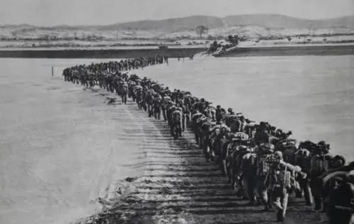
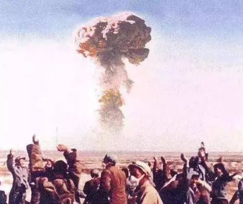

新中国成立之初，我国面临的国际国内形势是异常艰难和复杂的。由于长期战争，国内经济凋敝，民不聊生。国民党残余伺机破坏，匪患严重。有些地方还未得到解放，很多基层还未建立政权。以美国为首的西方国家在政治上孤立我们、在经济上封锁我们、在军事上威胁我们。1950年6月25日，朝鲜内战爆发，随后美国入侵朝鲜，同时派第七舰队侵入台湾海峡。新生的中华人民共和国遭到严重安全威胁。“打得一拳开，免得百拳来。”经过充分讨论和全面衡量，党中央和毛泽东主席作出了“抗美援朝，保家卫国”的战略决策。抗美援朝战争打出了新中国的国威军威，提高了中国共产党在全国人民中的威望，提高了中国人民的民族自信心和民族自豪感，维护了亚洲和世界和平，新中国站稳了脚跟。正像后来邓小平同志所说的那样，新中国的成立，“中国取得了一个资格：人们不敢轻视我们”。

志愿军战士跨过鸭绿江
同样，怎样建设社会主义，如何推进中国的现代化，对新中国成立之初的中国共产党来说，也是一个全新的课题。中国共产党从学习苏联到“以苏为鉴”，开始探索中国自己的社会主义建设道路。1956年，我国社会主义改造完成，确立起社会主义基本制度，并开始大规模进行社会主义建设，取得巨大的成就。1954年6月，毛泽东同志曾这样提出过问题：“现在我们能造什么？能造桌子椅子，能造茶碗茶壶，能种粮食，还能磨成面粉，还能造纸，但是，一辆汽车、一架飞机、一辆坦克、一辆拖拉机都不能造。”在中国共产党的坚强领导下，经过全国人民自力更生、艰苦奋斗，我们很快有了中国历史上的无数个第一：生产出第一架飞机、第一辆汽车、第一台拖拉机，自行研制第一颗原子弹、氢弹先后爆炸成功，自行研制第一颗人造地球卫星发射成功，自行研制第一艘核潜艇顺利下水，自行设计建造第一座大桥——南京长江大桥，在世界上首次人工合成牛胰岛素，首次培育成功强优势籼型杂交水稻等。经过20多年的奋斗，初步建立起独立的比较完整的工业体系和国民经济体系。邓小平同志说：“如果六十年代以来中国没有原子弹、氢弹，没有发射卫星，中国就不能叫有重要影响的大国，就没有现在这样的国际地位。”在这一时期，我国还初步解决了几亿人的吃饭穿衣问题，这在当时也被公认为是创造了一个世界奇迹。

第一颗原子弹爆炸成功
在那个激情燃烧的岁月，全党保持了良好精神状态，全社会形成了良好社会风气，进而转化为推进社会主义革命和建设的强大力量。大庆工人王进喜同志喊出“石油工人一声吼，地球也要抖三抖”，铁人精神给全国人民带来了难忘的印象、记忆和感动，激励和鼓舞全国人民不畏艰难、勇往直前。河南林县人民用简陋的工具，劈开太行山的重峦叠嶂，引漳河水入林县，建成“人造天河”红旗渠的事迹，就是这时全国人民奋发图强的一个缩影。
进行社会主义革命，确立社会主义基本制度，这是以毛泽东同志为核心的党的第一代中央领导集体，团结带领全党全国各族人民进行的伟大创造，体现了中国人民的意愿，符合中国的实际，顺应了历史发展的潮流。这场中华民族有史以来最为广泛而深刻的社会变革，为当代中国一切发展进步奠定了根本政治前提和制度基础，为开创中国特色社会主义提供了宝贵经验、理论准备、物质基础。
中国共产党在新民主主义革命时期、社会主义革命和建设时期团结带领中国人民实现了中华民族从“东亚病夫”到站起来的伟大飞跃。